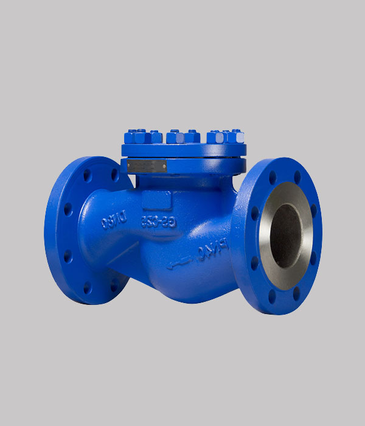

Добавить
Добавить
Клапан обратный поворотный
19с53нж
служит для защиты системы от обратного движения потока, выполняет предохранительную функцию и является автоматическим устройством, которое не нуждается в ручном управлении и настройках
Условия эксплуатации
- Температура рабочей среды: от -40 до + 425°С;
- Температура окружающей среды: от -40 до +50°С;
- Рабочая среда: вода, пар, природный газ, жидкие нефтепродукты;
- Климатическое исполнение и категория размещения по ГОСТ 15150-69;
- Направление потока среды: под захлопку;
Технические данные
- Привод: автоматический;
- Номинальное давление PN, МПа (кгс/см²): 4,0 (40);
- Присоединение к трубопроводу: фланцевое по ГОСТ 12815-80;
- Таблица-фигура: 19с53нж;
- Установочное положение на трубопроводе: на горизонтальном трубопроводе – крышкой вверх, на вертикальном – по направлению стрелки на корпусе;
- Регламентирующий документ: ТУ 3742-018-0218118-2002, ТУ 3742-003-07533604-94;
Материалы основных деталей
- Материал изделия (корпус, крышка): сталь 25Л;
- Материал изделия (детали затвора, захлопка): сталь 20х13;
- Материал изделия(ось): сталь 20Х13;
- Материал изделия (серьга, кронштейн): сталь 20;
- Материал изделия (прокладка): паронит ПА или ПОН-Б;
Документы
